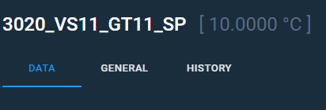

Z-Wave tag editor#
This article is about Z-Wave tags and their parameters which you can change in the editor.
To open the editor, you should click any Z-Wave device in the View tags menu, and choose or create a Z-Wave tag. You will see the Data tab on the screen.
You can enter the editing mode by clicking the edit button in the header's right corner.
Note
When editing an existing tag, you will see the current tag value in square brackets to the right from the tag name.

Data settings#
On the Data tab, you can configure the following parameters:
- Tag name
- Custom name
- Description
- IP address
- Type
- Update period
The Tag name is a necessary attribute of any tag in ControlMachines™ system. If a tag does not have the custom name, then it identified by the tag name parameter. The custom name appears in several parts of ControlMachines™ HMI View, such as:
- Trends
- Alarms
- Reports
You can put short information about the tag in the description field. This information will also be available in HMI View.
The IP address parameter describes the IP address of a physical device which the tag belongs.
The following types are available to set:
- Binary Switch
A tag type that can have two states (on and off). - Electric Meter
A tag type for cumulated values. - Cooling Meter
A tag type for cumulated values. - Gas Meter
A tag type for cumulated values. - Heating Meter
A tag type for cumulated values. - Water Meter
A tag type for cumulated values.
The Update period setting determines the data request frequency.
If you need to set the tag value manually, put the Writable flag on.
Parent article:
- IDE overview
An overview of ControlMachines™ HMI project development component.
Related articles:
- Z-Wave devices
In this article, Z-Wave devices and their parameters. - Tag general settings
In this article, you can find short descriptions of tag general settings. - Tag history settings
Briefly about History settings menu. - View tags
You can read about settings of tags and alarms in this article.